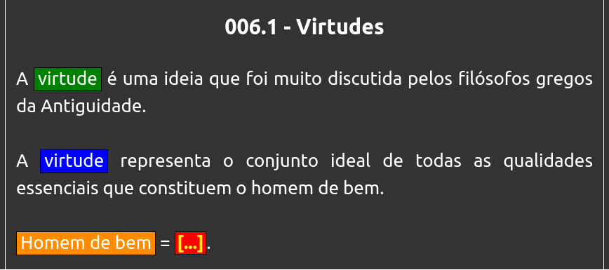
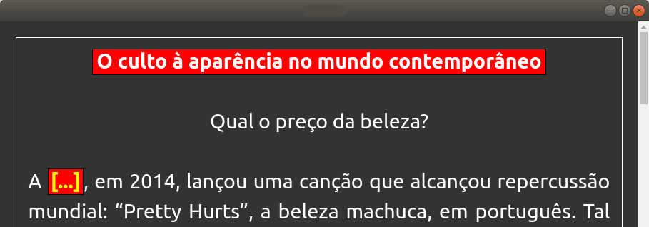

Resumos clozeados
Aumente sua velocidade de estudo sem perder a eficácia da revisão.
Os resumos clozeados do Anki são um tipo de cartão especial que converte os trechos que você sublinhou durante o estudo em blocos coloridos e destacados para que sua revisão seja mais eficiente.
Além disso, os trechos ocultados com o cloze serão automatizamente focalizados na hora da revisão para que você perca tempo os procurando.
Como estudar redação com o Anki?
Pensou que o Anki servia apenas para revisar flashcards?
Os resumos clozeados do Anki são um tipo de cartão especial que converte os trechos que você sublinhou durante o estudo em blocos coloridos e destacados para que sua revisão seja mais eficiente.
Além disso, os trechos ocultados com o cloze serão automatizamente focalizados na hora da revisão para que você perca tempo os procurando.